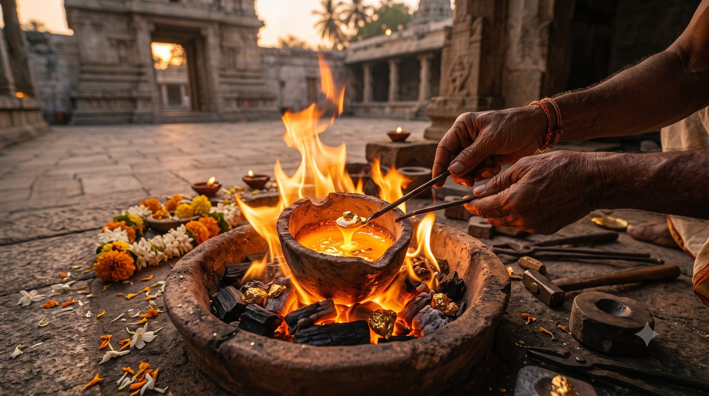

वेदों में लिखा है कि जब तक पशुबलि नहीं होगी, तब तक युग परिवर्तन नहीं होगा, आत्म-जागरण नहीं होगा। पहली बार सुनें तो यह बात चौंकाती है। क्या सचमुच आत्मा के जागरण के लिए किसी निर्दोष प्राणी की जान लेनी होगी?
इस प्रवचन में इसी प्रश्न को खोला गया है, और उत्तर बाहर नहीं, हमारे भीतर मिलता है।
क्या शास्त्र कोई स्वयं-सहायता की पुस्तक हैं?
सावित्र काठक अग्निचयन महायज्ञ की विधि वेदों में दी गई है। पर एक मूल प्रश्न है: यदि वेद इतनी सीधी भाषा में होते कि कोई भी पढ़कर समझ ले, तो गुरु का क्या काम?
शास्त्र सांकेतिक भाषा (coded language) में लिखे गए हैं, ताकि हर कोई उन्हें सहज ही न समझ ले। वे प्रतीकात्मक हैं, ताकि सुरक्षित रहें। उनके संकेतों को खोलने के लिए गुरु के पास जाना होता है। गुरु ही सही अर्थ सिखाते हैं।
"पशु को मारो": शब्दशः या संकेत?
उस विधि में एक वाक्य आता है: यदि सावित्र चयन यज्ञ सफल होना है, तो यज्ञ में पशु की बलि देनी होगी।
अब इसका शाब्दिक अर्थ लें तो क्या निकलेगा? इसे मारो, उसे मारो, बकरे को मारो, हाथी को मारो, चूहे को मारो। पर क्या किसी दूसरे को पीड़ा देकर कभी अपना भला हो सकता है? दूसरी परंपराओं और धर्मों में जहाँ ऐसा किया गया, उनके अपने ग्रंथ भी कहते हैं कि ऐसा नहीं करना था।
तो यह बात शब्दशः सच नहीं हो सकती। यह निश्चय ही संकेत है।
पशु यानी पाश: जो हमें बाँधे रखे
पशु शब्द पाश से आया है। पाश यानी बंधन। पशु का जीवन प्रकृति से बँधा होता है; वह प्रकृति के पार नहीं जा सकता, वहीं अटका रहता है।
तो मेरे भीतर वह कौन सा पशु है? मेरा काम, क्रोध, लोभ, मोह, मद, मत्सर, दंभ, दर्प, भय, शोक, कठोरता और क्रूरता। गीता इन्हें आसुरी संपत्ति कहती है। आचार्य जी कहते हैं कि यही सारे नकारात्मक गुण मुझे पशु बनाते हैं, और उसी पशु को मारना है, उसी की बलि देनी है।
आज आपके भीतर कौन सा पाश सबसे कसकर बँधा है: क्रोध, भय, लोभ या कोई और?
कौन सा यज्ञ? कौन सा कुंड?
अगला प्रश्न स्वाभाविक है: यह बलि किस यज्ञ में दें? कुंड कितना बड़ा हो, चक्र वाला, बाहर का या भीतर का? इसका उत्तर भगवद्गीता के चौथे अध्याय में है:
श्रेयान्द्रव्यमयाद्यज्ञाज्ज्ञानयज्ञः परन्तप।
सर्वं कर्माखिलं पार्थ ज्ञाने परिसमाप्यते॥
(श्रीमद्भगवद्गीता ४.३३)
हे परंतप अर्जुन, द्रव्यमय यज्ञ की अपेक्षा ज्ञानयज्ञ अत्यंत श्रेष्ठ है, और संपूर्ण कर्म ज्ञान में ही समाप्त होते हैं।
द्रव्ययज्ञ यानी बाहर का यज्ञ: जीवन में जो कुछ आपने किया। सीमा पर खड़ा सैनिक रणयज्ञ करता है। यज्ञ का अर्थ है अग्नि, और अग्नि का अर्थ है भीतर कोई तीव्र अभिलाषा (burning desire)। जो तृप्त करे, वह अन्न है: पेट के लिए भोजन, और मन के लिए विचार। बाहर जो कुछ अग्नि में डालते हो, वह द्रव्ययज्ञ है। पर श्रीकृष्ण कहते हैं, ज्ञानयज्ञ उससे कहीं, कहीं ऊँचा है।
ज्ञानयज्ञ की अग्नि कैसे जलती है?
ज्ञानयज्ञ तब होता है जब दो अग्नियाँ मिलती हैं: एक गुरु, जिनमें सिखाने की तीव्र अभिलाषा है, और एक शिष्य, जिसमें सीखने की तीव्र अभिलाषा है।
इस अग्नि में समिधा (यज्ञ की लकड़ी) डाली जाती है। आपकी समिधा है आपका अज्ञान, आपका अंधकार, और सबसे पहले आपका अहंकार। इसीलिए प्राचीन काल में शिष्य गुरु के पास समिधा लेकर जाते थे। यह प्रतीक था कि "मैं पहले यह सब छोड़ दूँगा।" उसके बाद ही सीखना शुरू होता है।
सोने की तरह तपना
अग्नि में सोना डालो तो वह और शुद्ध हो जाता है। उत्तम धातुएँ निखरती हैं, कचरा जल जाता है।
ठीक वैसे ही, गुरु के सान्निध्य में आपके नकारात्मक गुण जल जाने चाहिए, और जो सकारात्मक है, आपका दान, आपकी सेवा, आपका प्रेम, वह और शुद्ध होकर ऊँचे से ऊँचे स्तर तक पहुँचना चाहिए। एक सच्चे यज्ञ से यही अपेक्षा है।

हर कर्म अंत में ज्ञान बनता है
गीता निश्चित रूप से कहती है: हर कर्म अंततः ज्ञान में बदल जाता है।
परिवार के लिए किए त्याग का परिणाम तलाक हुआ? वह कर्म एक ज्ञान बन गया: विवाहित जीवन कैसे नहीं जीना। चोर जेल गया? उसने सीखा कि इस तरह नहीं करना था। गलत और ज़रूरत से ज़्यादा खाया और डॉक्टर ने शल्यक्रिया बताई? उस भोजन से सबक मिला। जबकि गीता में यह सब पहले से लिखा है: ईमानदार रहो, सात्त्विक भोजन करो।
कटु अनुभव से सीखें, या पहले से?
बुज़ुर्ग कहते हैं: "ये बाल ऐसे ही सफेद नहीं हुए। मैंने तुमसे पच्चीस बरसातें ज़्यादा देखी हैं।" उनके पास जो ज्ञान आया, वह कम से कम यह है कि जीवन कैसे नहीं जीना।
तो क्या बेहतर है? जीवन ढलते ढलते कटु अनुभवों से यह सीखना, या बचपन में ही वह ज्ञान पा लेना?
क्या आप अपने हर सबक के लिए ठोकर खाने का इंतज़ार करना चाहते हैं?
विधि का असली अर्थ
अब विधि साफ़ है। पशु को मारना है, यज्ञ में डालना है, तब जाकर आपकी आत्मा और आपका सूर्य तेजस्वी होगा, जागृत होगा।
आचार्य जी स्पष्ट करते हैं कि आपको कोई वास्तविक पशु नहीं मारना है। आपको अपने भीतर का पशु मारना है।
बहुत जन्मों के अंत में: सब में वासुदेव
यह बात गीता के सातवें अध्याय के उन्नीसवें श्लोक से पूर्ण होती है:
बहूनां जन्मनामन्ते ज्ञानवान्मां प्रपद्यते।
वासुदेवः सर्वमिति स महात्मा सुदुर्लभः॥
(श्रीमद्भगवद्गीता ७.१९)
बहुत जन्मों के अंत के जन्म में तत्त्वज्ञान को प्राप्त पुरुष, "सब कुछ वासुदेव ही है", इस प्रकार मुझको भजता है। वह महात्मा अत्यंत दुर्लभ है।
यह अंतिम जन्म, मोक्ष का जन्म, किसी कैवल्य पद वाले पुरुष, सद्गुरु या अवतार की बात है। ऐसे महापुरुष भी पूजा करते हैं; रामकृष्ण परमहंस काली की पूजा करते थे। पर वे किसकी पूजा करते हैं? किसी मूर्ति, चित्र या यंत्र की?
गीता में "वासुदेव" है; शिव पुराण में शिव होंगे, दत्त प्रबोध में दत्त। अपने इष्ट देवता का नाम वहाँ रख लीजिए। "वासुदेवः सर्वमिति" यानी सब कुछ ईश्वर है। उसके लिए कोई एक मूर्ति, चित्र, यंत्र या अंगूठी भगवान नहीं रह जाती।
जिस क्षण यह अनुभूति होती है, वह महात्मा बन जाता है। उसका अग्निचयन यज्ञ पूर्ण हो जाता है, सविता जागृत हो जाता है। और ऐसा व्यक्ति सुदुर्लभ, अत्यंत दुर्लभ है।
जो सब में ईश्वर देखे, वह किसे मारेगा?
अब सोचिए: उस अवस्था में क्या कोई बाहर का पशु मार सकेगा? क्या कोई मनुष्य अपने उद्धार के लिए दूसरे की जान ले सकेगा?
संभव ही नहीं। उसे तो सब में वासुदेव दिखते हैं। वह अनुभव करता है: "मैं और वह, ठीक एक ही हैं।"
सिद्धांत से आगे: साधना
आप जो कर रहे हैं, वह बिल्कुल सही है; आप ज्ञानसत्र में आ गए हैं। पर केवल सिद्धांत से बहुत सहायता नहीं होगी। ज्ञान पाप करने से नहीं रोकता, वरना "विनाश काले विपरीत बुद्धि" न कहा जाता।
आचार्य जी कहते हैं कि उनका काम कुंडलिनी जागृत करना है, और परिणाम ज़रूर आएगा, पर करना ज़रूर है। इसलिए कुंडलिनी जागरण और साधना आवश्यक है। साधना यहाँ भी है, आप जहाँ हैं वहाँ से भी कीजिए; परिणाम वही आएगा। और जितना सामूहिक रूप से करेंगे, लाभ ही लाभ होगा।
मुख्य बातें
- वेद और शास्त्र सांकेतिक भाषा में हैं; उनका सही अर्थ गुरु से मिलता है।
- पशु शब्द पाश (बंधन) से आया है। भीतर के काम, क्रोध, लोभ, मोह, भय, क्रूरता जैसे गुण ही वह पशु हैं जिसकी बलि देनी है।
- गीता ४.३३ के अनुसार द्रव्ययज्ञ से ज्ञानयज्ञ कहीं श्रेष्ठ है, और हर कर्म अंततः ज्ञान में समाप्त होता है।
- ज्ञानयज्ञ में गुरु और शिष्य की तीव्र अभिलाषा अग्नि है, और अज्ञान व अहंकार उसकी समिधा।
- कटु अनुभवों से जीवन के अंत में सीखने से बेहतर है समय रहते ज्ञान पाना।
- गीता ७.१९ का महात्मा सब में वासुदेव देखता है; ऐसा व्यक्ति किसी प्राणी को मार ही नहीं सकता।
- ज्ञान के साथ साधना अनिवार्य है, और सामूहिक साधना में लाभ ही लाभ है।